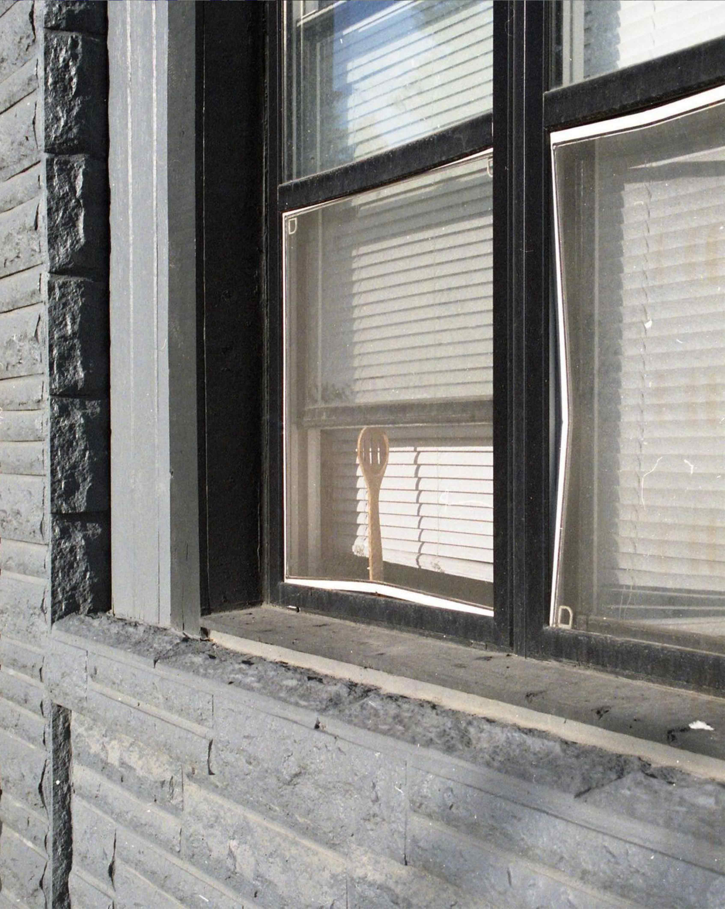
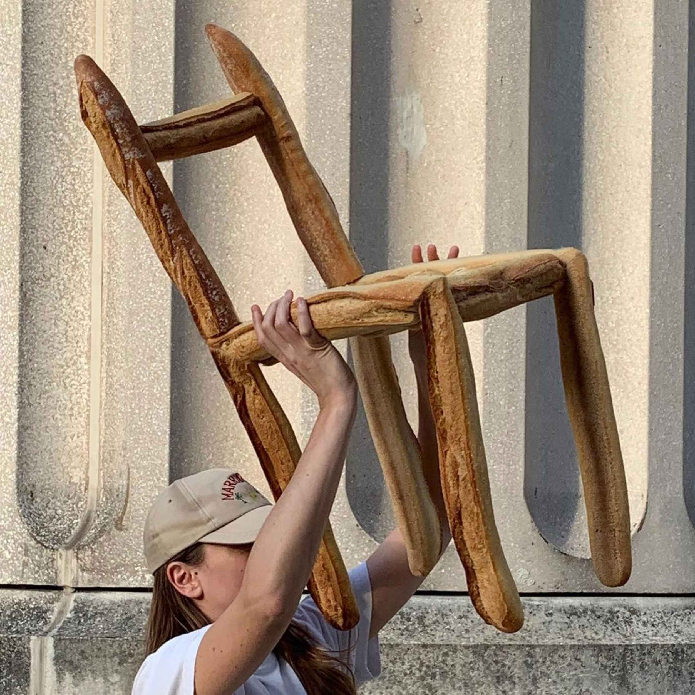
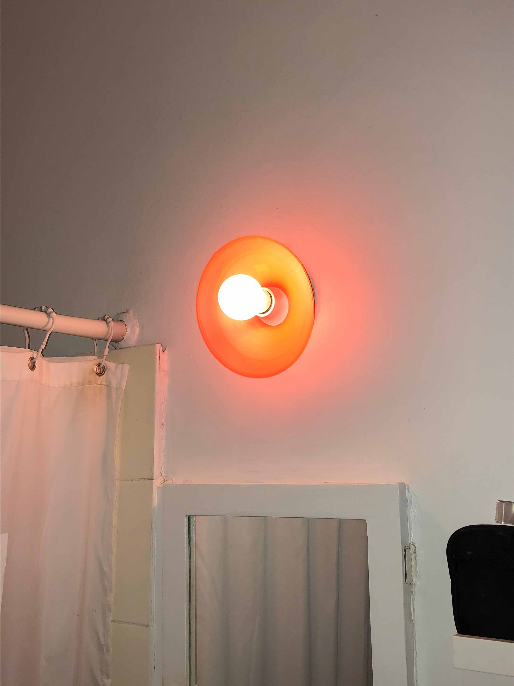

This series of photographs is an investigation into the ways in which objects can be repurposed or recontextualized, allowing different narratives to unfold surrounding their use. I am interested in simple, recognizable forms that can be removed from the rigid expectations of not just functionality, but function: a cellphone is a ubiquitous object, and there’s something almost funny about seeing it merely protecting a tabletop. I don’t mean to devalue the designed object. On the contrary, I think using an object in a playful and new way adds to its value. The manifestations of this way of thinking are quite literally endless, and in my own design practice, I am constantly thinking about all the unthinkable uses of what I’m designing: generative interactions I can’t see that someone else might.
Some References & Inspiration
Untitled by Andy Smith
Baguette Chair by Farine Furniture
Variables
